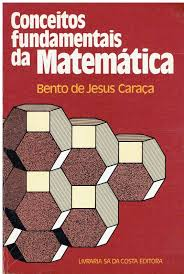

1.
"Polémica António Sérgio": Uma nota crítica que desencadeou uma das polêmicas mais interessantes em
Portugal, no domínio da história e filosofia da ciência.

2.
"A Cultura Integral do Indivíduo": Um texto essencial e central da obra de Caraça, proferido na Universidade
Popular Portuguesa em 1933.

3. Lei Fundamental da Matemática